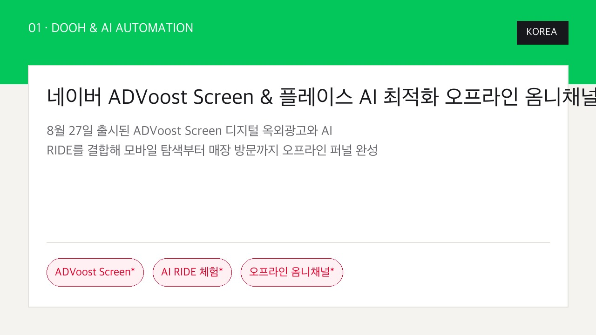
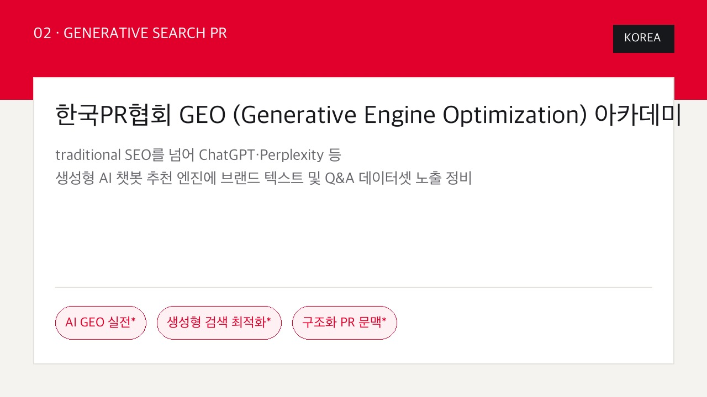
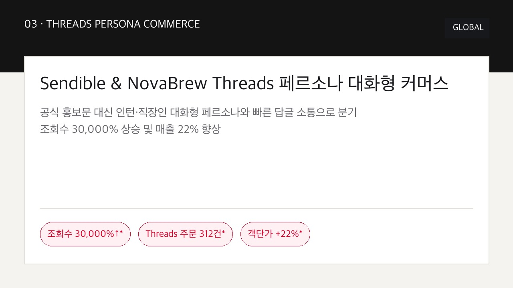
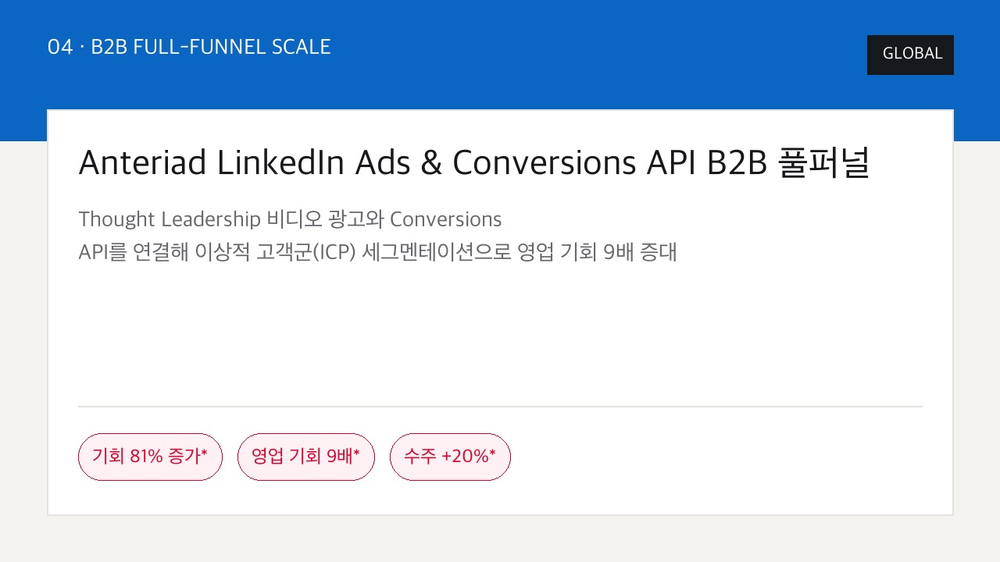
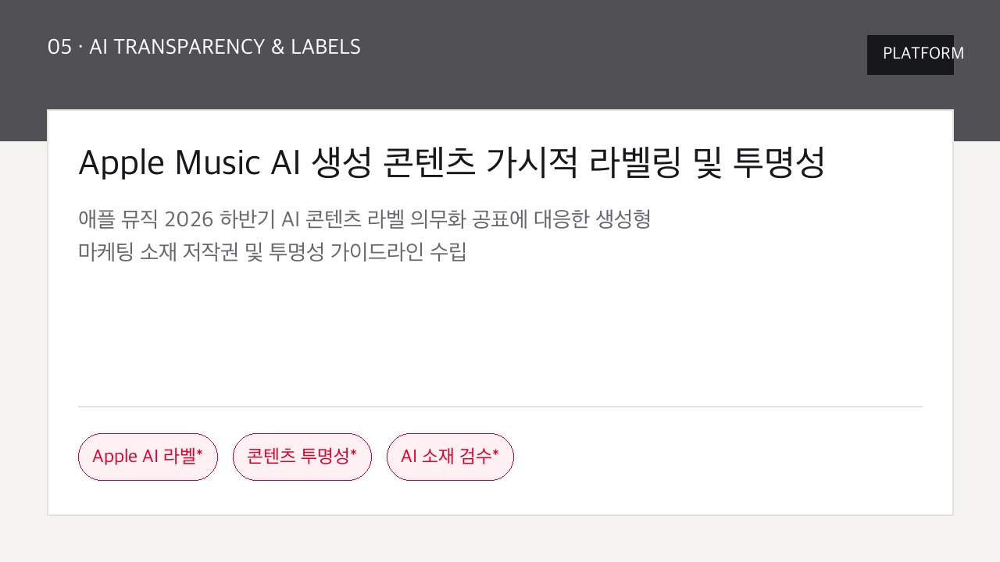
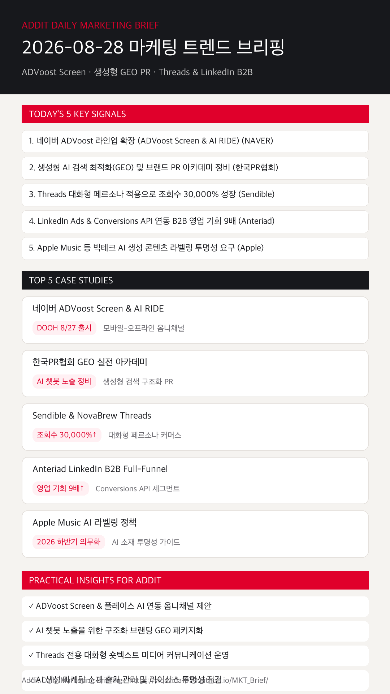

01
네이버 ADVoost Screen 출시로 모바일-DOOH 옴니채널 퍼널이 완성된다
8월 27일 공식 출시된 ADVoost Screen 디지털 옥외광고와 AI RIDE를 결합해 매장 방문 전 위치 기반 타깃팅을 구현합니다. (NAVER)
네이버 ADVoost Screen DOOH & 플레이스 옴니채널, 생성형 엔진 GEO PR, Threads 30,000% 조회수 페르소나 및 LinkedIn B2B 영업 기회 9배 전략을 한눈에 확인합니다.
8월 27일 공식 출시된 ADVoost Screen 디지털 옥외광고와 AI RIDE를 결합해 매장 방문 전 위치 기반 타깃팅을 구현합니다. (NAVER)
traditional SEO에서 ChatGPT·Perplexity 대응 생성형 엔진 최적화(GEO)로 이동함에 따라 Q&A 구조화 PR 문맥 배포가 필수화됩니다. (한국PR협회)
기업의 공식 홍보문 대신 일상 대화형 페르소나 및 10분 내 쾌속 답글 소통으로 Threads 유입 커머스 매출을 끌어올립니다. (Sendible)
Thought Leadership 비디오 광고와 Conversions API를 통한 타겟 ICP 세그멘테이션으로 최종 수주 20% 향상을 기록합니다. (Anteriad)
애플 뮤직 2026 하반기 AI 콘텐츠 라벨 의무화 공표에 따라 마케팅 제작물의 라이선스 및 투명성 검수를 정례화합니다. (Apple)

KOREA8월 27일 공식 출시된 ADVoost Screen으로 매장 방문 전 위치 기반 타깃팅 광고를 자동 노출하고 오프라인 유입을 스케일업했습니다.

KOREAPerplexity·ChatGPT 등 생성형 챗봇 엔진에 브랜드 정보가 수집·추천되도록 Q&A 데이터셋과 GEO 구조화 PR 문맥을 정비했습니다.

GLOBAL비하인드 퀴즈와 대화형 숏텍스트 소통으로 분기 조회수 30,000% 증가 및 NovaBrew Threads 유입 주문 312건을 달성했습니다.

GLOBAL타깃 ICP 세그멘테이션과 멀티 터치포인트 세그멘테이션으로 LinkedIn 영향 기회 81% 증가 및 식별 영업 기회 9배 확대를 기록했습니다.

PLATFORM애플 뮤직 라벨 표시 정책에 대응해 마케팅에 사용하는 AI 생성 이미지/음원 소재의 라이선스와 투명성 검수를 시스템화했습니다.
8월 27일 출시된 ADVoost Screen과 플레이스 ADVoost를 조합하여 매장 방문 고객의 모바일-DOOH 접점을 일체화합니다.
네이버 ADVoost Screen 공지 근거 보기 →단순 언론홍보 기사 배포를 넘어 주요 AI 챗봇이 참조할 수 있는 Q&A 데이터셋과 GEO 구조화 아티클을 패키지화합니다.
한국PR협회 GEO 아카데미 근거 보기 →인스타그램 재활용을 지양하고, 현장감 있는 대화 및 질문형 텍스트로 10분 이내 빠른 답글 소통을 가동합니다.
Sendible Threads 리포트 근거 보기 →B2B 테크 고객사를 위해 Thought Leadership 비디오 광고와 Conversions API를 연결한 파이프라인 추적형 광고를 도입합니다.
Octane11 Anteriad 사례 근거 보기 →애플 뮤직 등 빅테크 AI 라벨링 강화에 맞춰 AI 마케팅 제작물의 출처 관리와 상업적 라이선스 투명성을 사전 점검합니다.
9to5Mac Apple AI 라벨 근거 보기 →8월 27일 출시된 ADVoost Screen DOOH 플랫폼과 AI RIDE 체험 캠페인 가이드를 확인합니다.
네이버 광고주센터 바로가기 →Anteriad B2B 풀퍼널 비디오 광고 및 Conversions API 스케일업 사례를 분석합니다.
Octane11 바로가기 →
마케팅 성과는 단순 수동 검색 대응에서 네이버 ADVoost Screen 옴니채널, 생성형 GEO PR 구조화, Threads 대화형 페르소나의 유기적 퍼널 확장으로 완성됩니다.
{kind=link}